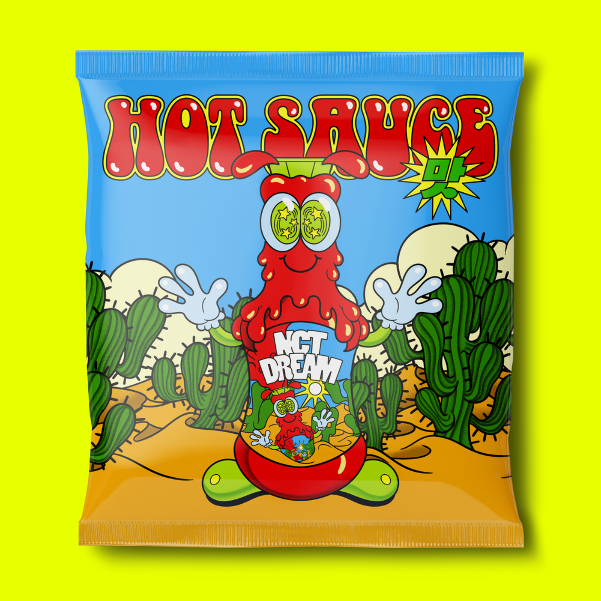

Neo Culture Technology
NCT Dream adalah sub-unit ketiga dari boy band asal Korea Selatan NCT, yang khusus beranggotakan remaja dengan usia belasan tahun. NCT Dream diumumkan secara resmi sebagai unit ketiga dari NCT pada 18 Agustus 2016. Jisung menjadi anggota pertama yang diperkenalkan, disusul oleh Chenle, Jeno, Haechan, Mark, Renjun dan terakhir Jaemin. Video klip untuk singel "Chewing Gum" dirilis pada 24 Agustus 2016 dengan dua versi, Korea dan Mandarin. Mereka melakukan debut pada 25 Agustus 2016 di M! Countdown, sedangkan singel dirilis secara digital pada 27 Agustus 2016.Rilis Album Hot Sauce
NCT DREAM secara resmi merilis album terbaru “Hot Sauce” pada 10 Mei 2021. Satu minggu setelah album tersebut dirilis, sejumlah rekor berhasil dipecahkan oleh grup yang berada di bawah naungan SM Entertainment tersebut.Keunikan Album Hot Sauce
Lagu Hot Sauce disebut akan menampilkan sinergitas luar biasa dari tujuh member NCT Dream, yakni Mark, Renjun, Jeno, Haechan, Jaemin, Chenle, dan Jisung. Hot Sauce juga mengusung genre hip hop dengan Afrobeat yang berisikan pesan pesona kuat NCT Dream yang membuat penggemar nantinya ketagihan layaknya mengonsumsi hot sauce (sambal pedas). Album Hot Sauce akan menjadi kesempatan pertama Mark kembali merilis album bersama NCT Dream lebih dari dua tahun setelah merilis We Go Up pada 2018. Meskipun, mereka sejatinya telah reuni dalam album RESONANCE Pt. 1 melalui track video Déjà Vu.Playlist Album Hot Sauce

Berikut Daftar Lagu Hot Sauce:| No | Judul | Durasi |
| 1 | "Hot Sauce" (Hangul: 맛; RR: mat; lit. flavour) | 3:15 |
| 2 | "Diggity" | 3:29 |
| 3 | "Dive into You" (Hangul: 고래; RR: Gorae; lit. Whale) | 3:12 |
| 4 | "My Youth" (Hangul: 우리의 계절; RR: Uri-ui Gyejeol; lit. Our season) | 3:56 |
| 5 | "Rocket" | 2:55 |
| 6 | "Countdown" (3, 2, 1) | 3:34 |
| 7 | "ANL" | 3:45 |
| 8 | "Irreplaceable" (Hangul: 주인공; RR: Ju-ingong; lit. Hero) | 3:24 |
| 9 | "Be There for You" (Hangul: 지금처럼만; RR: Jigeumcheoreomman; lit. Just like now) (Sung by Renjun, Haechan & Chenle) | 3:43 |
| 10 | "Rainbow" (Hangul: 책갈피; RR: Chaekgalpi; lit. Bookmark) | 3:51 |
| Total Durasi | 35:09 | |